Orienter
Le phare d’accueil devient le point fixe du hall et permet d’identifier immédiatement l’information principale.
Réaménager le hall de l’hôpital pédiatrique Lenval comme une odyssée intérieure : un parcours lisible, rassurant et inclusif inspiré par la Méditerranée.

Le hall d’un hôpital pédiatrique est à la fois un lieu d’arrivée, d’orientation, d’attente et de passage. Le projet cherche à diminuer la sensation de stress sans perturber les flux ni les exigences de fonctionnement propres au milieu médical.
L’objectif est de rendre l’espace immédiatement compréhensible, tout en offrant aux enfants et à leurs accompagnants plusieurs manières d’attendre : être guidé, s’isoler, jouer, travailler ou partager un repas.
La Méditerranée devient le fil conducteur du projet. Ses variations de lumière, ses mouvements et ses profondeurs sont traduits par une palette allant du galet clair au bleu électrique, des formes courbes et une succession d’ambiances.
Comment concevoir un hall hospitalier à la fois fonctionnel, apaisant et capable de parler à l’imaginaire des enfants ?
Le hall est divisé en cinq zones nommées comme des paysages marins. Ces appellations donnent une identité à chaque usage et constituent une signalétique narrative : le phare d’accueil oriente, le belvédère informe, les bulles protègent, le lagon accueille le jeu et le rivage rassemble.
Les courbes accompagnent les déplacements et évitent une lecture trop institutionnelle de l’espace. Les surfaces mates, les textiles adaptés au soin, les sols faciles à entretenir et les touches métalliques composent un environnement durable, accessible et plus chaleureux.
Le vocabulaire marin ne décore pas le hall : il sert à orienter, hiérarchiser les usages et créer des degrés de calme.
Le parcours passe de zones lumineuses et ouvertes à des espaces plus enveloppants. Les volumes courbes fonctionnent comme des repères visibles à distance et préservent de larges cheminements autour du mobilier.
Le phare d’accueil devient le point fixe du hall et permet d’identifier immédiatement l’information principale.
Les bulles de tranquillité créent des retraits sans isoler totalement les parents de l’activité du hall.
Le lagon et le rivage proposent des usages actifs : jouer, lire, manger, travailler et se retrouver.
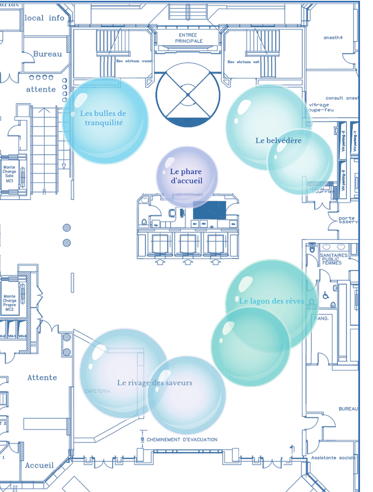
Premier élément visible depuis l’entrée, il oriente les patients et distribue les demandes.
Un espace d’accueil administratif ouvert, identifiable et rassurant.
Des assises protégées pour se reposer, attendre ou retrouver un peu d’intimité.
Une zone sécurisée pour jouer, lire et s’occuper sous le regard des accompagnants.
Un espace de restauration et de sociabilité réunissant tables, comptoirs et postes de travail.
Le comptoir central rassemble l’information sans fermer l’espace. Sa forme enveloppante guide naturellement les visiteurs tandis que les bleus installent une identité immédiatement reconnaissable.
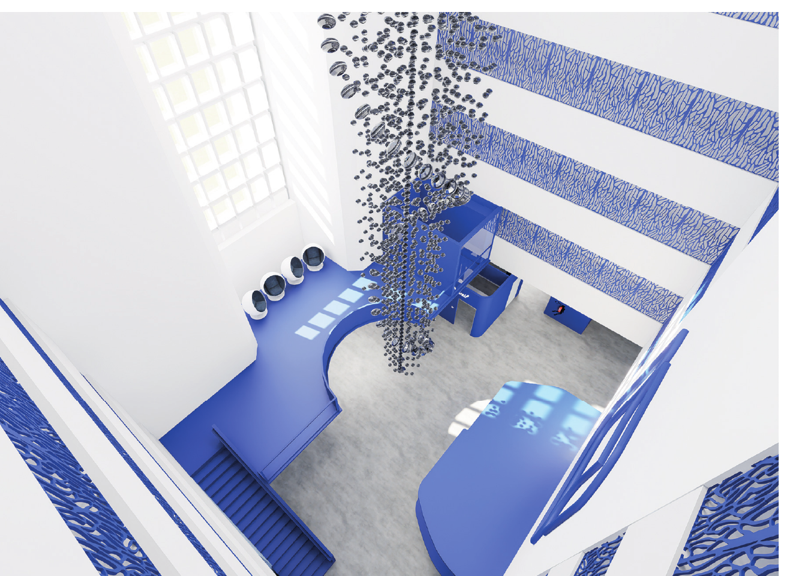
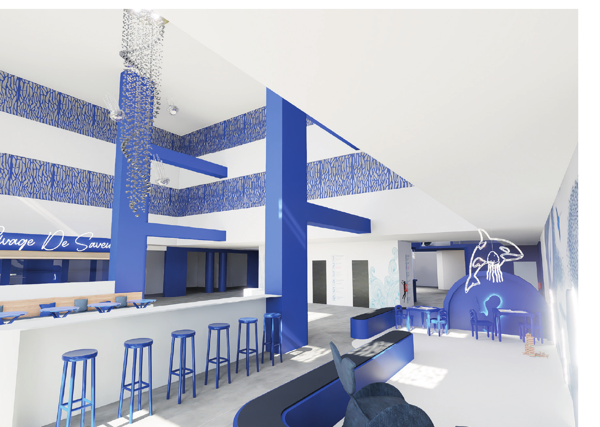
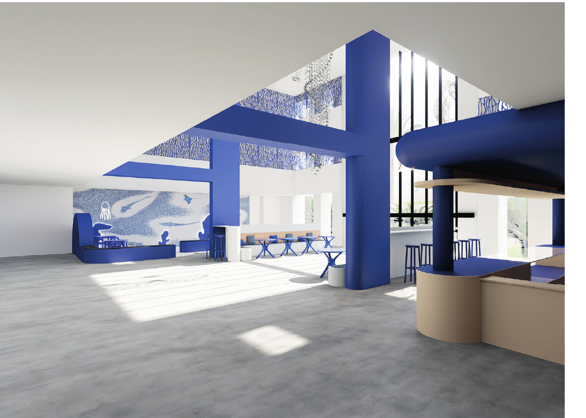
Des peintures satinées et lessivables limitent les reflets agressifs tout en facilitant l’entretien quotidien.
Les grandes dalles vinyles réduisent le nombre de joints et améliorent la sécurité, l’hygiène et le confort acoustique.
Les assises privilégient des textiles hypoallergéniques, résistants, nettoyables et compatibles avec les contraintes d’un lieu de soin.
L’acier inoxydable et les alliages métalliques sont sélectionnés pour leur robustesse et leur facilité de nettoyage.
La maquette replace l’intervention intérieure dans le volume architectural de Lenval. Elle aide à comprendre la composition de la façade, la centralité de l’entrée et l’échelle du grand hall.
Les photographies de la maquette sont déjà intégrées à cette étude de cas.
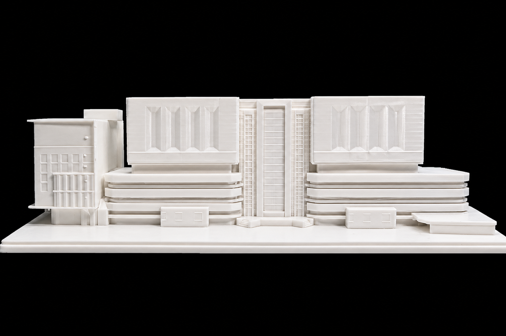
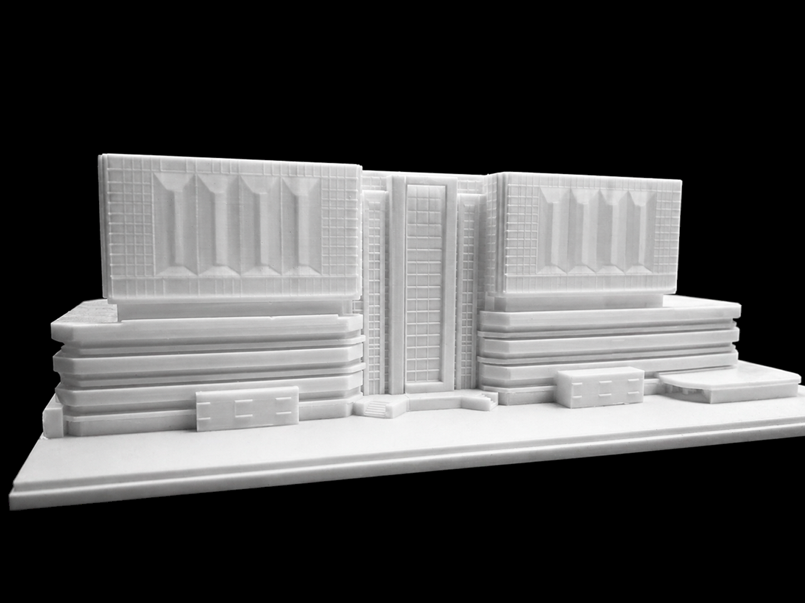
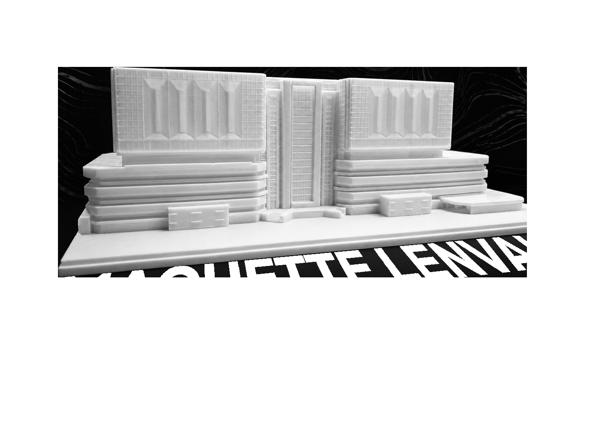
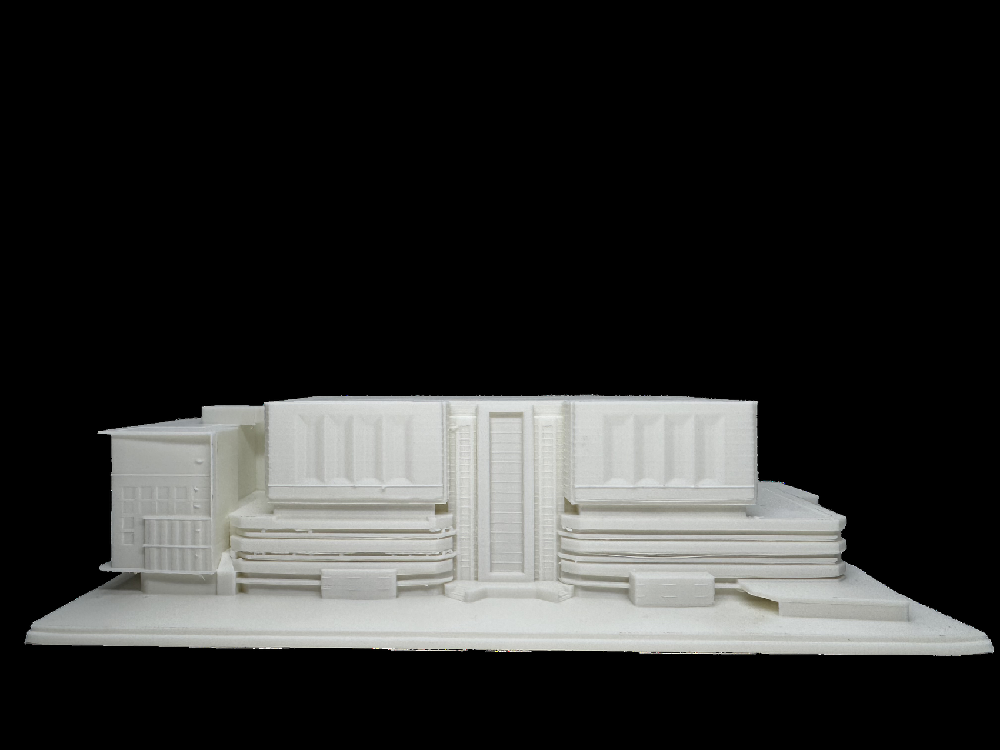
Les plans traduisent le récit marin en organisation concrète : maintien des circulations, visibilité des zones et intégration d’un mobilier dessiné pour chaque usage.
Le projet conserve un hall très ouvert. Les interventions se concentrent sur des objets-repères, suffisamment présents pour structurer l’espace sans bloquer les déplacements ni les cheminements d’évacuation.
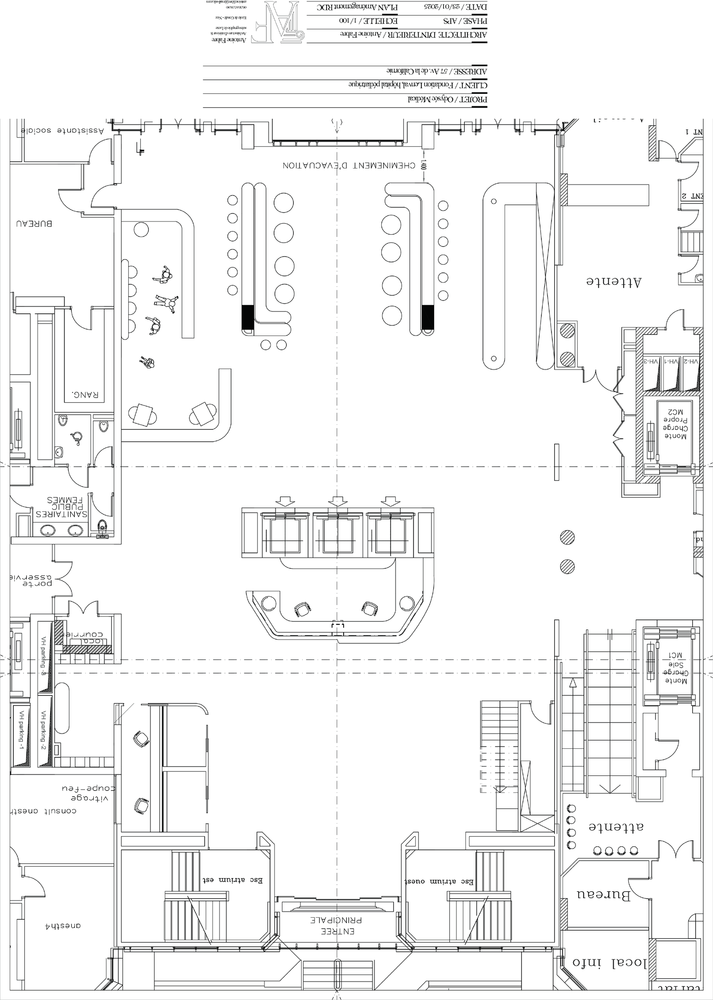
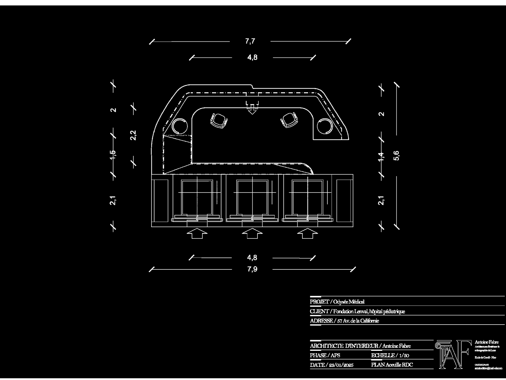
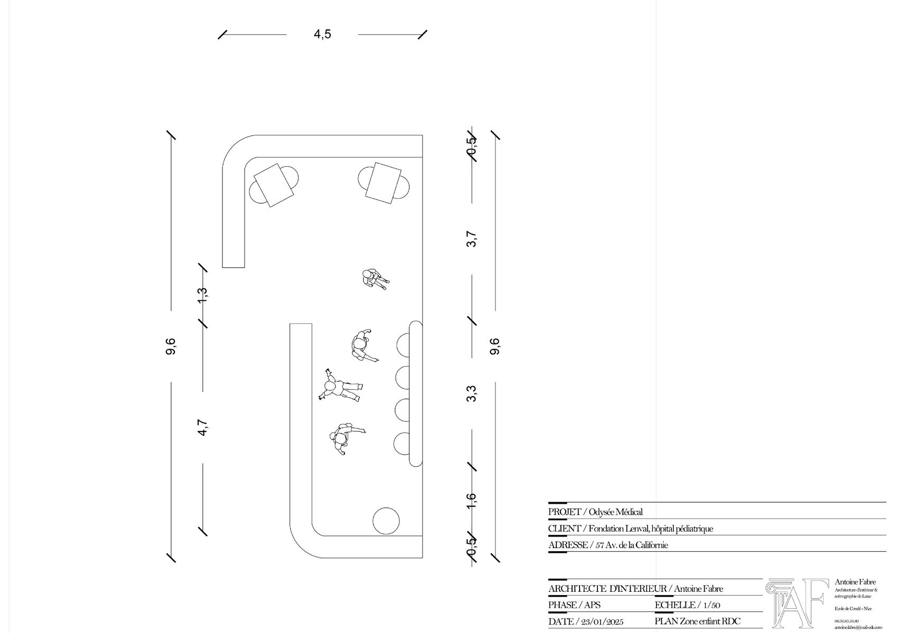
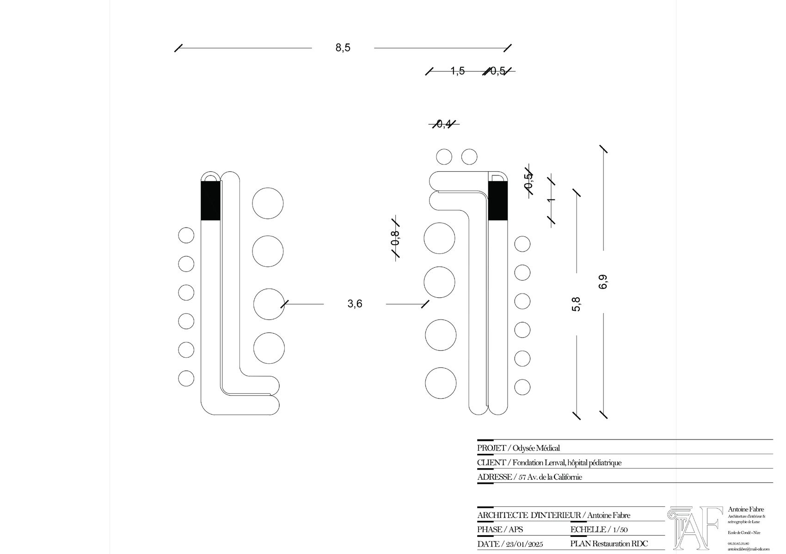
Planche de synthèse
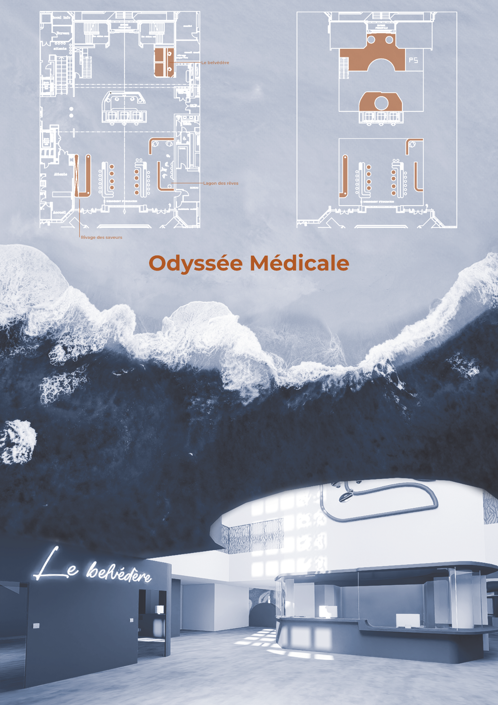
Cet emplacement est prêt pour une visite immersive du hall et de ses cinq zones.
Le lecteur est déjà configuré pour le site. Il suffit de remplacer le fichier MP4 en conservant le même nom.
videos/odyssee-medicale-immersive.mp4
Architecture tropicale

Accueil & accompagnement

Plans & détails